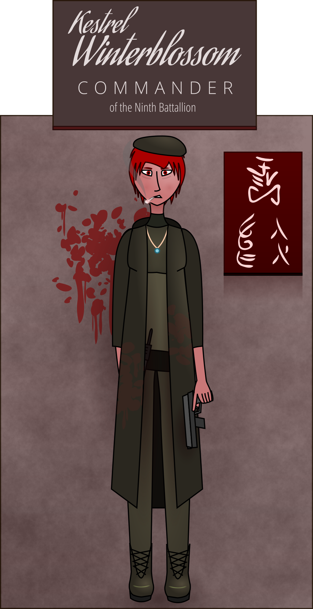

We’re inside the compound now. Dim lights illuminate a compartment between two huge blast doors as we clamber out of the transports. I link up with Bear as he exits the other vehicle. He sees my expression and gives me a reassuring nod.
Commander Ranvar says something to the soldiers guarding the entryway and the step aside. “Follow me,” she calls, turning to us and beckoning. “Be sure you have your identification papers ready.”
I take the lead. Past the entrance is a narrow room divided by series of glass gates. The last of my staffers file in, and the entrance doors slide shut behind us. Around us, officers are unloading metal crates onto counters. They filter out as we move in, exiting the way we came.
“We’re going to need to collect your personal belongings,” the commander explains. “Nothing but bodies comes through these doors. Please find the crate with your name printed on the front and stow your possessions. Everything will be stored securely until your return.”
I frown. “We can keep our jewelry, can't we?”
Ranvar shakes her head. “I'm afraid not, comrade.”
Piper gives an audible mewl of alarm. I clutch my sapphire necklace protectively. “Are there any exceptions? I…” I search for the right phrasing. “This is important culturally. It would feel wrong representing our people without it.”
The commander frowns slightly. “If you absolutely must… If you surrender your necklaces to extensive inspection, and they come through clean of electronics or encodings… I’ll need to clear it with the station commander, but I believe that would be acceptable to her. Soshten-retlas, maseste?”
The security officer nods and takes a few fabric bags from a wall compartment. She hands them to me.
“Anyone with jewelry to bring through, place it in a bag and leave it on top of your assigned crate,” Ranvar orders. “If possible, I’ll have it brought to you once you’ve been cleared through.” She pats the security officer on the arm. “I’ll leave you in the capable hands of Soshten-retlas here.”
I exhale in relief and take a bag, placing my necklace gently inside. To my side, I see Piper take one… and catch a flash of blue as she takes something out of her pocket?
Piper? No. Not possible. And wouldn’t she have told me…?
Why wasn’t she wearing it?
Or. Did it… My eyes open wide. Did it belong to… to someone?
Oh, Piper. You poor girl.
A few others take jewelry bags as well. Jay in particular glowers at the bag for a bit before unpinning her sapphire.
I turn my attention to my crate. My handset goes in first, looking large, clunky, and primitive compared to all the sleek Society technology around us. My staff reluctantly follows suit, ditching handbags, radios, notebooks, pocketknives, and scarves. Soshten clears her throat as she sees us closing the crates.
“All of your personal belongings,” she says, sounding a little annoyed.
I glance around the room. “We have, unless I’m missing something?” I reply.
She sighs. “Including your clothing.”
There is a moment of shocked silence.
“You don’t mean for us to— to undress right here!?” Piper blurts, staring.
“Of course I do. It’s standard security policy.” The officer frowns, looking genuinely concerned. “Is there some sort of issue?”
“I’m not getting naked in front of everyone!” Piper cries out in disbelief.
“Is this some kind of sick joke? Are you hazing us?” Jay demands.
The officer seems baffled by our reaction. “This is perfectly serious,” she responds. “It’s a necessary measure to prevent the smuggling of contraband to Tel Casran. I don’t understand why you find this so objectionable.”
“Colleagues. Please.” I step forward, and hold up my hands. “I think there's been some kind of… cultural misunderstanding.” I turn to the officer. “Comrade Soshten, among our people, it's not permissible to be naked in the presence of others. Is it different among yours?”
“Oh!” She nods. “I see. I’m sorry this is uncomfortable for you. Unfortunately, that’s not a cultural quirk we can accomodate.”
I blink. A cultural quirk? “Can’t you at least let us undress one-by-one?” I stammer, taken aback.
Soshten gives me an apologetic smile. “I'm afraid we just don’t have the facilities for that. I can report this incident to my superiors and recommend they build an individualized screening center for future League ambassadors, but right now, you’re going to have to make do.”
“No!” Piper says, her voice tiny and frightened. “This is humiliating!”
“What’s next, rape?” Jay demands. “You can’t do this to us. I won’t do it.”
Thiiiis is spiralling out of control fast. I need everyone back in line… and there’s only one way I can think of to accomplish that.
“I will,” I announce, raising my voice. Jay stops in her tracks. I shrug out of my overcoat, pull off my waistcoat, and begin to unbutton my tunic. “This only humiliates us if we allow it.”
Bear, bless him, follows my lead. “We’re Sapphirians, aren’t we?” he demands, beginning to disrobe. “The den tsuang and their coward Empress did a lot worse than strip us naked to try and take away our dignity. Did they succeed?”
“…no,” Piper concedes, looking down.
“It’s time for us to be brave, my friends,” I urge them. I pull my tunic over my head and throw it to the floor, baring my upper body before them. “We’re here to represent our people. Let’s make them proud.”
Piper blushes, looks away from me quickly. “I…” she murmurs.
I take her by the hand. “We’re all right here, Piper. Nothing is going to happen to you, or anybody. A bit of fabric is nothing compared to the solidarity of our people.”
“…aah…okay…” Awkwardly she fumbles with her tunic, reluctantly unfastening it, stealing a glance at my bare chest and then looking back immediately. “You’ve never been wrong before.”
The words hit me with the force of a blow. It’s a struggle not to physically flinch. A voice in my head screams. She has no idea how wrong—
I need to be brave for my people.
I turn to hide my heaving chest and wild eyes from them, and with shaking hands pull down my skirt. I can feel all their eyes on me. My cheeks are burning now, hot with humiliation my bravado could only just keep in check. I’d heard the stories. One of my women… we brought her back, we don’t… didn’t leave anyone behind, not in the Ninth… she couldn’t fight anymore. Killed a few more den tsuang dogs with a manic fury and terror I’d never seen on a soldier’s face before, and then she was gone, off to a job in logistics somewhere, somewhere she didn’t have to see their faces, their armor, their swords everywhere.
They didn’t take our dignity by stripping us. They didn’t stop there.
I close my eyes, then immediately open them because Sparrow is hiding on the underside of my eyelids, still crusted all over with blood, huddling in a corner of the cage, chained like an animal, bruised, battered. I suck in a desperate breath. She was on opium by the time she left. Here. Now. She got the White Stripe. I saw to that. She’s going to live in comfort and safety for the rest of her life and she’s never going to work again, she’s never gonna fight again, she’s here, she lived, she lived, she lived—
I fixate on the concrete floor, trying to blot out the images with something here, something now. The adrenaline is surging. I remember, barely, to keep my hands moving. My skirt falls to the floor. The floral patterns weave themselves into my thoughts like cool water on a burn. I exhale with relief, tracing the outlines of roses and pitchblossoms as I slowly stand and begin to fold it.
Only Bear notices, and he shifts his position ever so slightly to try and block our staff's view of me. Poor Bear. It’s not the first time I’ve seen him butt naked — the showers were awful cramped back then — and it’s a uniquely undignified look on him. He’s not an unattractive man, but… he couldn’t intimidate a robin with his pants off like that.
I take advantage of the reprieve to wipe the tears out of my eyes, and breathe in deeply. Good old Bear. Always pulling me out of the fire—
I start and let out a barely-stifled yelp as I feel a hand on my shoulder, spinning on instinct and driving my fist towards a throat it sails high over.
The security officer steps back hurriedly, a hand on her weapon. I cover my mouth with my hands and quickly drop to my knees. Fuck. “I’m sorry!” I manage, barely more than a whisper. “I’m sorry.” Please don’t kill me.
To my surprise, her hand falls away and she reaches out, a gentle look on her face. “I’m so sorry,” she murmurs. “I should not have startled you so.”
“Sorry… s-ssory… was… an accident, I’m… it was… a-automatic,” I babble, shaking so hard I can barely find her hands. She takes mine and puts a supportive arm around my back, lifting me gently to my feet.
“I know, comrade,” she says, and it’s the first time she’s called any of us by the title. She inflects it differently than Ranvar did, puts more weight on it.
“Y-you… you…”
“Take a moment to steady yourself. Focus on my voice. Focus on the here and now.” The officer squeezes my hand. “You’re in the Embassy. You're safe. Whatever you're seeing, it happened a long time ago.”
I can only stare at her as I fight to slow my breathing, collect myself. Her touch is gentle, soothing. Not what I ever would have expected from a soldier. Her eyes are newly kind.
“H…how…” I clear my throat, finally piecing a full sentence together. “How did you know?”
“My unit was active-duty before we were sent here. I’ve seen combat, surin. You’re not just an ambassador, are you?”
“I…” I take another breath to steady myself. “No.”
“Then… the necklaces…”
I nod. “Yes.”
Her expression changes to one of determination. “I will ensure they are brought back to you in a timely fashion, comrade. You have my word as a citizen. Til surinte, niltash.”
“I… I…” I can’t keep myself from giving her a look of pathetic gratitude. “Thank you,” I murmur, looking down.
I am suddenly acutely aware that I have no clothes on but my underwear. I barely stifle the instinct to cover my breasts with my hands. To make it worse, Soshten puts a hand under my chin and lifts my head back up, so casually that she might as well have been nodding at me on the tram. “This is nothing to be embarassed about, comrade,” she tells me, a note of urgency in her voice. “Scars are to be respected.”
“You’re…” I close my eyes, take a few steadying breaths, then open them again. I feel more in control now. Words come more easily. Soshten’s worried eyes bore into mine. “You’re very kind, ma’a—” I begin, catching myself and instead finishing, “comrade.”
Soshten looks quizzically at me. “For… showing you such a minimal courtesy?”
“Minimal?” I stare. “You just pulled me out of a flashback. I… if most people saw me like this they’d laugh at me.”
Soshten’s face twitches. “Laugh?” she asks, almost disbelieving.
“Yes, of—” I pause, remembering who I'm talking to. “Is it… different, on Tel Casran?”
“No citizen would even think to treat a wounded comrade with such… unpardonable cruelty.” Soshten shakes her head. “I… they were not exaggerating when they told us your world was very different.”
Soshten’s hand is still on my bare waist. The warm touch is as anchoring as it is… inappropriate, and I can’t quite bring myself to tell her it’s crossing a line. I’m still in that fragile place — I don’t want to slip away again.
“Did you—” I shake my head quickly. “I’m sorry, I’m so sorry about all this, you came over here for something— how can I help you, offic— comrade?”
“I came over because you seemed in distress,” Soshten says gently, stroking my side a bit. God, that’s— this is how they treat people they don’t even know? This is just normal to her, to comfort a stranger this way?
Well, it’s working.
“You just… you just wanted to make sure I was okay? A prisoner?”
Soshten looks alarmed. “You’re not a prisoner!” she exclaims hurriedly. “Comrade Ambassador, on behalf of the People, I do most humbly apologize; may I enquire as to what we have done to disrespect you? I certainly do not wish to afford you further insult.”
“What have—” I blink. “We’ve been surrounded by soldiers with rifles this entire time, and they keep manhandling my people— You’re taking away our possessions; ash, you’re forcing us to strip naked in front of everyone! How are you treating us as anything other than prisoners?”
Soshten immediately steps back and bows. I feel both relief and disappointment as she takes her hand from my waist. “Comrade,” she blurts, “while my authority is limited, on behalf of my superiors, I beg that you accept my sincerest apology for the treatment you have been subjected to. Clearly… insufficient consideration was given to… cultural differences. Not just your… odd nudity taboo. If we have in any way traumatized your people or forced them to violate tenets of their respective faith—”
I hold up a hand. “No, no, I— I don’t think it’s that bad. Well, you might have traumatized Piper a bit, but—” I blink. “Differences? Are you saying on Tel Casran this… this is normal?”
Soshten nods. “Many facilities require a comprehensive search as a basic condition of entry. It’s… fairly routine, I’ve never really thought about it.”
“And all this… pushing us around, holding onto us… when that soldier checked my card she just… grabbed my chin and… you’ve shown no respect for our bodies or our privacy. I’ve never seen such conditions outside of—” I bite down on my tongue, focusing on the sting of pain to try to abort the thought, and shake my head wordlessly.
“Privacy? No… respect?” Soshten blinks. “You don’t find it… comforting, to be guided?”
“Comforting!?”
“Did… oh.” Soshten’s eyes widen, and she bows again. “I hope I did not offend your dignity too gravely in my… fumbling attempt to assist. I would be mortified to learn so.”
“No… no… you helped, I just.” I shake my head. “Touching a person’s body without their consent… well, we’re used to autonomy. We even passed a law last year making it a kind of assault. You can get flogged for it if they complain; I’ve seen it happen— some of the former ladies were… too free with their hands.”
Soshten places her palm on her chest. “I will notify the base commander at once. Clearly we have… clearly mistakes were made. I do not want your people to suffer further. Please, allow me to rectify this and to personally apologize to you for my disrespectful behavior. So many things it’s never occurred to me to think— well. I am deeply sorry, Comrade Kestrel-ambassador. I hope you will forgive me for any wounds I have unthinkingly inflicted.”
“No! No, no, it’s all forgotten,” I interject hurriedly. “Please, don’t feel guilty. You did something very kind for me, you helped me a lot. It wouldn’t have been acceptable in my culture but, I— well, I’m an ambassador! It’s my job to bridge the divide. And maybe…” I smile timidly. “Maybe I have things yet to learn. I am sure your advanced culture has many new ideas to offer our people.”
Soshten crosses her palms and inclines her head. “You are a very gracious woman, comrade. I am so glad that my intervention was helpful. I am sorry to hear that your culture has such a cruel perspective of…” She hesitates. “Of shanvol. I am sorry, my education in your language was minimal, I do not know the right word.”
“The right word for… shanvol?” I frown. “Does that mean, like… a flashback?”
“No, no, it…” She hesitates. "It means the reaction condition you suffer from? That your war inflicted on you?”
“Condition?”
“The… the flashbacks, the anxiety. Certain things or words setting it all off. Surely you know what I mean?”
“It’s… a condition?”
“It…” Soshten blinks rapidly. “Surely some among your comrades experienced similar reactions.”
My voice is quiet, mousey, withdrawn. “I thought I was the only one.”
“You thought—” Soshten shakes her head violently. “It is something many of the People are treated for. These are… well, they are a normal reaction to violent trauma.”
“Normal…?” I whisper.
“Did you think—”
“I thought I was broken.”
Soshten is quiet for a moment. Then she steps forward and, to my complete surprise, wraps her arms around me, hugging me gently.
“I am going to ask a counselor to check in on you after you clear security,” she says, withdrawing, but pausing to pat my shoulders reassuringly. “Comrade Kestrel, I am so sorry for everything that has happened to you.” She bows again. “If you will excuse me, I should make some calls—”
“Wait. If you’re going to talk to the commander…” I hesitate. “You should know… she should know… the reason our laws are like they are, well.” I fight to keep my thoughts pointed ahead, prevent them from skidding, veering off into the dark and bloody corners. “During the war. The den tsua— the Imperial soldiers. The Guard. They did things. To our people. They—” I swallow hard. “—disrespected our bodies. I rescued prisoners sometimes. I—”
My head jerks to the side almost by instinct. My throat burns as the vomit splatters against the floor. I stagger, clutching at my suddenly churning stomach, wrenching my thoughts desperately away from that track as it claws and drags and tries to pull me back in. Blotting out the images with the sight of Soshten’s horrified face.
“—they took what they wanted,” I manage, sliding down against the counter, burying my head in my hands, completely and utterly humiliated.
“Ambassador!” Soshten immediately drops to her knees and barks an urgent order into her handset. “Do you require medical attention?”
“No… no…” I wave her away, not looking up. “It’s just… it’s… there’s no poultice for memories.”
My people have seen by now. All buck naked, they’ve seen their leader, their Ambassador, the woman whose name brought them to Destiny Garden in the first place, huddled and broken in a pool of vomit.
I’ve failed them. I’ve failed Sapphire. I’ve made a mockery of us in front of a lowly security officer. I might as well turn around and go home.
I am broken. I was an idiot to think I could ever be anything else.
“Ambassador! Kess! Kess—”
“Can you do anything for her? Do you know—”
“I know, this is— oh, Kess, honey—she’s been fine for weeks—”
“This is my fault. Our fault. Comrade, I am so, so sorry—”
“Kess! Kess, hey, come back to us! Ambassador!”
The sound of Bear’s voice draws me back, like so many times before. My old friend is on his knees next to me, like so many times before. Helmet dented, armor bloody, face scratched, covered in dirt and stubble. In the distance I can hear the dull thump of grenades and rocketfire—
I blink, over and over again until it’s gone. I’m sobbing when I finally come back to reality. I can’t even speak. Bear tries to shoe Soshten away; she indignantly refuses, reaches out, touches my shoulder, tries to comfort me—
My adrenaline spikes again as I feel cold metal entering my veins. My arm jerks reflexively but Bear has a firm grip on it. Someone new next to him— where did he come fr—
I gasp. An almost physical sensation of comfort and warmth floods through my body. I can feel my breathing, my heartbeat slowing. The terror, panic, and self-hate recede into the distance, to be replaced a glow of peace and serenity. I look up hazily, blink, again and again, but the world is steady. Solid. It’s real.
The sensation of cold metal slips out of my vein and Bear releases my arm. I look up at the man crouching over me. When did he get here?
“Comrade? Comrade Ambassador?” he’s saying.
I open my mouth uncertainly, close it, open it again. “Y-yes?” I whisper.
“Okay. She’s back with us.” The man squeezes my arm gently. “Hi Kestrel. I’m a medic, okay? I’m here to help you, okay?”
“I…” My vision is swimming a little. “…okay.”
“How are you feeling? Don’t worry about anything else, just focus on your body and your mind. Is there anything hurting you?”
I blink. “N…no,” I murmur, surprised.
The three around me visibly relax. “Come on. Let’s get you on your feet.” Bear takes one of my arms, Soshten the other, and they lift me, steadying me until I’m sitting on the table. I look around blearily. The little gray room. The boxes. Bear. Piper—
I take a deep, ragged breath. “I think I’m gonna be sick.”
“You were already,” says Bear, a slightly teasing tone creeping back into his voice. “A couple times, actually. You didn’t have much of a breakfast this morning, did you, Kess?”
“Bear?”
“That’s me, Kess. You’re here. It’s real. Just like your starvation diet.”
I blink. I look at the medic.
“What happened?”
He sits down next to me, putting a hand on my shoulder. “I gave you a shot. You were in the middle of a very dramatic attack; we needed to abort it and bring you back.”
“A… a shot?” I tilt my head quizzically. “How did a shot bring me back?”
The medic briefly glances at Soshten with an expression I’ve seen one too many times from the People today. He looks back at me. “I gave you a kind of drug. It’s called ‘fentadone.’ What it does is, it goes into the pleasure center of your brain, and it sends out these signals that calm you down and get you back on your feet. I think you have something like it, um. What’s the word. They told us in Foreign Culture— sèing, I think?”
“Opium?” I blurt out, horror slipping past the drug’s walls and into my voice. “You… you shot me up with opium?”
“No, no, not opium,” the medic says hurriedly, glancing at Soshten again. “It’s just— it works on the same part of the brain. It just doesn’t last as long.”
“I…” I shake my head violently. “I don’t want to get strung out, I…”
The medic looks back at Soshten, mouths the phrase at her. Soshten shrugs with a how-the-fuck-should-I-know look on her face.
“Do you know what she means, comrade?” the medic asks Bear.
“She’s afraid of getting addicted, sir.”
“…‘addicted?’”
“I had friends… I saw what opium did to them, in the war…” I squeeze my arms into my lap, shrinking back, trying not to think about the strange, intense pleasure filling up my body. “Their arms… some of them… they died, I…”
“You’re not going to die, Ambassador,” the medic interjects quickly. “You’re going to be just fine, okay?”
I cringe away from him. “I can’t… not opium… get it out of me, I…”
“Hey.” Bear steps in front of me, takes my head in his hands. “Hey, Kess. Look at me. Listen. I don’t think this is opium, Kess. I don’t think this is what took Owl away, okay? I think this is, like. One of those Society scientific miracles the President is always on about, right? It’s just a medicine. Just like any other. It brought you back to us. It took you away from the war. That’s good, right? That’s good.”
I hesitate. “I…” I look down. “I suppose.”
“It’s not going to hurt you. It’s gonna be… doc, how long until it’s out of her?”
“About fifteen minutes.”
“There, you see? Fifteen minutes and everything will be back to normal. Just a little pick-me-up to get you back on your feet, okay, pal?”
I nod, slowly. “I… okay.”
Soshten parks herself next to me on the table and puts an arm around my neck as the doctor gets up to depart. “Hey, Ambassador. Remember me?”
I nod. “Yeah, I’m… yeah. Sorry, it’s just… taking me a minute to get my bearings. It’s like waking up from a dream sometimes.”
“I know, comrade. I know. Are you gonna be okay?” I feel her warm, soft hand on my back, moving gently up and down. I crumple, resting against her shoulder. She seems to have expected it.
“I let everyone down.”
“You—?” Soshten stares at me. “Hey. Listen to me. Listen to me, Ambassador, you didn’t let anyone down. You got through all that and you’re still here, okay? You got through it for your people.”
I chance a brief, humiliated glimpse at the people who followed me here, the gaggle of naked women and men standing around. Piper is standing at the front, and the look on her face…
I look at the others. Jay, as inscrutable as always. Thrush, shellshocked. Ash, frightened. And Piper.
Her hands are clutched to her chest. Faint desperation lingers in her features. Her eyes… they’re full of fear, and…
…and care.
I need to be strong for my people.
I need to be strong for her, and… whoever she lost.
“I think I’m going to need to make another speech,” I murmur, sliding off the table, my slim, light body swaying as my feet touch the floor, Soshten snatching my shoulder so I don’t fall.
“Oh, no you don’t.” Soshten steps in front of me, putting her hands on my arms. “You stay there. I’ve got this one, comrade.”
She turns. She looks at my people, each one in the eye. Her gaze lingers on Piper, as she steps forward.
“When I came to this world,” she says, her voice sharp and professional again, filled with military steel, “you know what I expected to find? A hive. A gaggle of foreign, excitable revolutionary rabble and looters and capitalist corruption. I thought my gun would get more use than these words they made us learn. I thought that was a waste of time. You know what I found instead?
“I found a place of hope. A place as serene and stable as any League world. I’ve been to Destiny Garden, seen Sunfury’s ashes. Where the Ambassador met with your president, and told me she felt like she could walk safe on your streets at night without a single bodyguard. That’s the world you built. I’ve had to use my words so much I’m almost fluent. I almost have the ‘ça’ sound down, even. And I had no idea how in all Haven you ever turned something like a den tsuang world into something like this without us or the League doing all the heavy lifting — and so quickly, too.”
Soshten turns to me, and looks me in the eye.
“Now I know.”
She turns back to my people. “Your commander, your Ambassador — she is bearing scars for your people like I’ve never seen. She is fighting every day through that pain to make a better galaxy for her people. I never thought I would see the day when I would look at a Sapphirian and call her comrade, but Ambassador Kestrel is as true a comrade as any of the People. I would have been honored to fight by her side. I would still be.”
She turns, and points a finger at me. “Protect her,” she growls.
As Soshten stalks off, Piper is the first to rush forward, grasping my hand and looking pleadingly into my eyes. “Ambassador? Ma’am? Are you okay? Can I do anything?”
The rest look to each other, and then quietly follow.
I look down at Piper’s eyes, and if it weren’t for the gentle buzz of the “fentadone” in my system, the look in them would have jerked me straight back to the worst night of my life.
I look away. I look up at my people.
Then, taking a deep breath, I reach down and slip my underwear off.
“What are you all standing around for?” I demand, tossing the small black shorts into my assigned crate. “We have work to do.”
